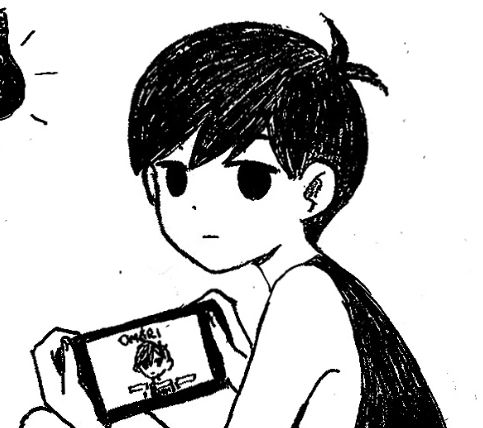

Sobre o jogo!
OMORI é um RPG de terror psicológico. Sua história explora temas como amizade, memórias, famíia e sentimentos por meio de cenários e personagens que escondem muitos mistérios.
Durante a história, o jogador acompanha Omori e seus amigos em um universo de sonhos em paralelo ao mundo real Apesar dos ambientes coloridos, a história também apresenta momentos inquietantes e emocionantes.

Personagens
Omori conta com a companhia de alguns amigos durante suas aventuras.
Amigos principais de Omori!
- Aubrey: uma amiga determinada, bruta e cheia de personalidade que participa da aventura.
- Kel: um garoto animado, carinhoso, divertido e cheio de energia que ajuda a não deixar a aventura com um clima ruim.
- Hero: um amigo cuidadoso, irmão de Kel, que ajuda o grupo com seus conselhos sábios.
Como jogar?
O jogo é no estilo RPG, de exploração e com diálogos que ajudam a conhecer os personagens e tomar decisões que podem mudar a forma de descobrir a história.
- Explore os cenários e examine os objetos.
- Converse com os personagens pelo caminho.
- Participe das batalhas por turnos.
- Use as habilidades e emoções dos personagens nos combates.